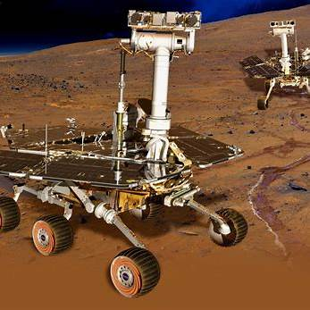

Spirit & Opportunity Rovers
Mission Goals
Spirit and Opportunity were designed to explore Mars’ surface and geology, and look for signs of past water activity. Their goal was to learn more about the history of water on Mars and whether the planet might have supported life in the past.
Launch and Landing
Spirit launched on June 10, 2003, and landed in Gusev Crater on January 4, 2004. Opportunity launched on July 7, 2003, and landed in Meridiani Planum on January 25, 2004. Both used airbags to bounce safely onto the Martian surface.
Major Discoveries
- Found minerals that only form in water, like hematite and silica.
- Discovered rock formations shaped by liquid water.
- Provided strong evidence that Mars once had wet conditions suitable for life.
Technical Highlights
- Solar-powered with six wheels and a robotic arm.
- Equipped with panoramic cameras and spectrometers.
- Designed for 90 days, but Spirit lasted over 6 years, and Opportunity operated for nearly 15 years.